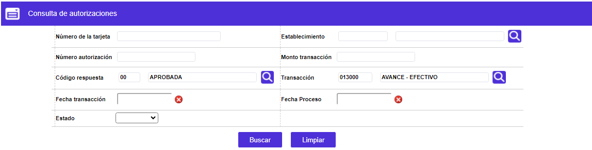
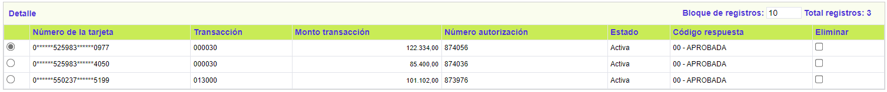
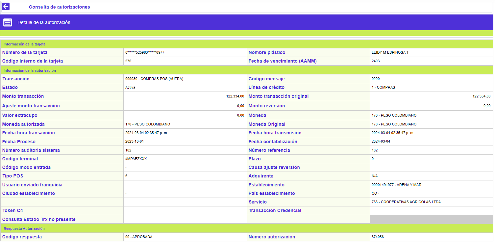

Consulta de autorizaciones
Utilizando como criterio uno o varios de los campos contenidos en este formulario, es posible conocer en detalle las autorizaciones que han sido otorgadas por el sistema, y que aún no han cruzado con el movimiento o utilización para las que se generaron o, que aún no han cumplido el tiempo de vigencia dado por parámetros.
Filtro: El formulario cuenta con conjunto de campos o criterios para realizar la búsqueda, mínimo debe contener un dato:

|
Número tarjeta |
Campo en el que se digita el número de tarjeta por la que se desea efectuar la consulta.
|
|
Establecimiento |
Campo en el que se puede digitar o seleccionar de la lista de valores provista el código del comercio en el que se efectuó la transacción que se requiere consultar. Si el código existe, se despliega el nombre del mismo.
|
|
Número de autorización |
Campo en el que se digita el número de autorización sobre el cual se desea realizar la consulta. |
|
Monto transacción |
Campo en el que se digita el monto o valor de la utilización sobre el cual se desea realizar la consulta. |
|
Código respuesta |
Campo en el que se puede digitar o seleccionar de la lista de valores provista, el código de respuesta dado por el sistema sobre la autorización respecto de la cual se desea realizar la consulta. |
|
Transacción |
Campo en el que se puede digitar o seleccionar de la lista de valores provista, el código de la clase de transacción asociada a la utilización respecto de la cual se desea realizar la consulta. Si el código digitado hace parte de la lista, se muestra la descripción o nombre de la misma, en caso contrario, el sistema notifica que ese dato no se encuentra. |
|
Fecha transacción |
Campo en el que el sistema permite seleccionar de un calendario, la fecha en la que se realizó la utilización respecto de la cual se desea realizar la consulta. |
|
Fecha de proceso |
Campo en el que se permite seleccionar de un calendario, la fecha en la que se generó la autorización respecto de la cual se desea realizar la consulta. |
|
Estado |
Campo que ofrece una lista de valores tipo combo de la que se puede seleccionar el estado de la autorización por el cual se desea realizar la consulta: Activa, Procesada o Reversada. |
A través del botón Buscar, el sistema muestra un formulario que contiene los distintos registros que coinciden o concuerdan con los criterios de búsqueda. Adicionalmente se dispone del enlace Detalle.

Detalle: A través de este botón el sistema muestra un formulario con la siguiente información:
